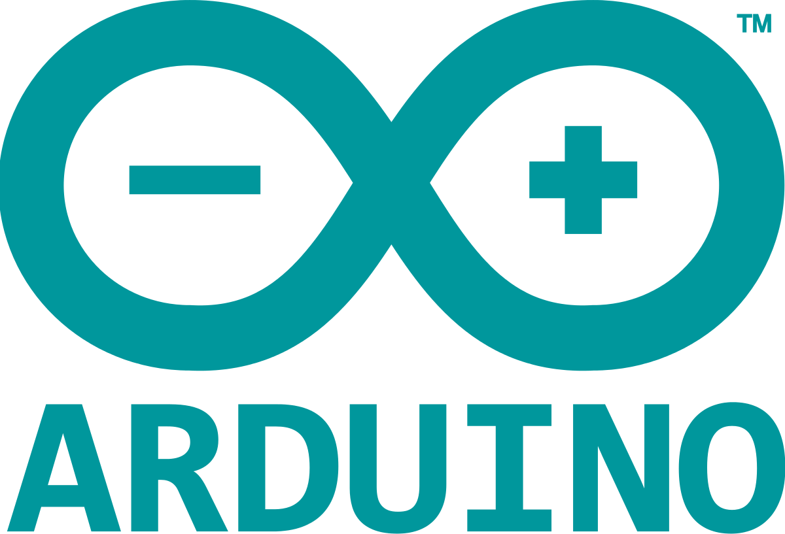

Cozmo este echipat cu senzori, motoare şi capacităţi vizuale, poate fi controlat de pe un smartphone şi reprezintă cel mai recent produs creat de Anki, un start-up din San Francisco specializat în robotică. Aceeaşi companie a lansat deja pe piaţă setul de jucării Overdrive - maşini de cursă robotizate. Are mai mult de 325 de senzori individuali, părți mobile și sisteme electrice, toate lucrând împreună pentru a-i da lui Cozmo o varietate de emoții. Are patru motorașe, unul pentru a călca, două pentru cele două pârghii de înălțare.
Cozmo nu este prima jucărie-robot controlabilă de pe un smartphone. Produse similare sunt deja disponibile pe piaţă şi pot să îi înveţe pe copii diverse principii generale de informatică, să joace diverse jocuri sau chiar să facă farse, precum androidul BB-8, produs de compania Sphero şi inspirat din franciza ”Star Wars”. Însă cei mai mulţi dintre roboţi nu sunt echipaţi cu abilitatea de a învăţa de-a lungul timpului, a dezvăluit Boris Sofman, CEO-ul companiei Anki. ”Există, cu siguranţă, multe produse pe piaţă care vor să reprezinte un robot-animal de companie, un robot-jucărie sau un robot-însoţitor, dar tuturor le lipseşte capacitatea de a vedea cu adevărat şi de a-şi înţelege mediul înconjurător”, a spus Boris Sofman.
Personalitatea lui Cozmo este controlată de un program de inteligenţă artificială, iar micul robot învaţă să recunoască feţe umane şi să joace jocuri precum ”Quick Tap”, în care jucătorii trebuie să potrivească seturi de culori. Atunci când pierde o rundă, Cozmo îşi aruncă, într-un acces de furie, cuburile cu care se joacă, dar, atunci când câştigă, îi place să se dea mare. ”Vrea să fie ca acel maestru Jedi, dar nu este încă suficient de bun pentru asta, aşadar trebuie să îşi cizeleze talentele...iar voi sunteţi acolo pentru a-l ajuta”, a spus Boris Sofman.
Viziteaza Site-ul Producatorului
Cercetatorii de la Massachusetts Institute of Technology (MIT) au reusit sa dezvolte primul animal electronic complet autonom. Botezat Cheetah, robotul celor de la Boston Dynamics este construit dintr-un ansamblu din materiale compozite care, imbinate sub forma unui quadruped, se inspira din mecanica miscarii unui animal de prada. Dupa mai multi ani de experimente, prezentate pe larg de GadgetReport.ro, cercetatorii au reusit, intr-un final, sa isi vada visul devenit realitate.
Ghepardul electronic zburda prin curtea institutului, fara sa mai aiba nevoie de cabluri de control si alimentare. Mai mult chiar, aleargă cu 30 de kilometri pe oră şi este capabil să sară jumătate de metru în înălţime.
Robotul este controlat de la distanta de un computer care transmite pistonilor hidraulici ritmul alergarii si viteza. Proiectul Cheetah este finantat din surse ale Armatei SUA, prin intermediul programului M3 program (Maximum Mobility and Manipulation), care cauta un vehicul de transport sufficient de rapid si mobil incat sa ii asigure asistenta pe campul de lupta.
Cheetah va fi folosit, într-o primă fază, pentru a detecta explozibilii şi în misiuni de spionaj. Ulterior ar urma să fie dezvoltată şi o variantă sub forma unui fel de cal-robot care sa asigure soldatilor miscare rapida in teatrul de operatiuni. In clipul de mai jos veti vedea o demonstratie a modului in care alearga robotul Cheetah.
Viziteaza Site-ul Producatorului


Viziteaza Site-ul Producatorului
Arduino este o companie open-source care produce atât plăcuțe de dezvoltare bazate pe microcontrolere, cât și partea de software destinată funcționării și programării acestora. Pe lângă acestea include și o comunitate uriașă care se ocupă cu creația și distribuirea de proiecte care au ca scop crearea de dispozitive care pot sesiza și controla diverse activități sau procese în lumea reală.[1] Proiectul este bazat pe designul plăcilor cu microcontroler produse de câțiva furnizori, folosind diverse tipuri de microcontrolere. Aceste plăci pun la dispoziția utilizatorului pini I/O, digitali și analogici, care pot fi interfațați cu o gamă largă de plăcuțe numite scuturi (shield-uri) și/sau cu alte circuite. Plăcile au interfețe de comunicații seriale, inclusiv USB pe unele modele, pentru a încărca programe din calculatorele personale. Pentru programarea microcontrolerelor, Arduino vine cu un mediu de dezvoltare integrat (IDE) bazat pe proiectul Processing, care include suport pentru limbaje de programare ca C și C++.
Arduino UNO este o platforma de procesare open-source, bazata pe software si hardware flexibil si simplu de folosit. Consta intr-o platforma de mici dimensiuni (6.8 cm / 5.3 cm – in cea mai des intalnita varianta) construita in jurul unui procesor de semnal si este capabila de a prelua date din mediul inconjurator printr-o serie de senzori si de a efectua actiuni asupra mediului prin intermediul luminilor, motoarelor, servomotoare, si alte tipuri de dispozitive mecanice. Procesorul este capabil sa ruleze cod scris intr-un limbaj de programare care este foarte similar cu limbajul C++.
Placa Arduino UNO se conecteaza la portul USB al calculatorului folosind un cablu de tip USB A-B, disponibil in varianta de 1.5 metri sau de 3 metri. Poate fi alimentata extern (din priza) folosind un alimentator extern. Alimentarea externa este necesara in situatia in care consumatorii conectati la placa necesita un curent mai mare de cateva sute de miliamperi. In caz contrar, placa se poate alimenta direct din PC, prin cablul USB. Pachetul contine doar placa Arduino, si nu si cablul USB sau alimentatorul extern (este necesar sa le comanzi separat, daca doresti).
Viziteaza Site-ul Producatorului